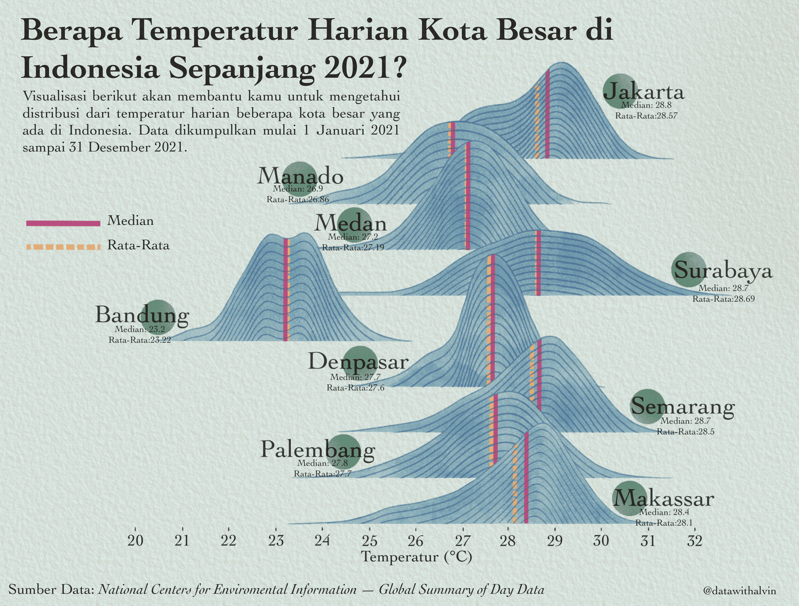

Temperatur Harian Kota Besar di Indonesia Tahun 2021
Published: 25.07.2022
Gambar di bawah berikut ini adalah visualisasi suhu harian di beberapa kota besar di Indonesia pada tahun 2021 yang menunjukkan variasi yang cukup signifikan. Dalam pembuatan visualisasi ini, aku menggunakan matplotlib untuk membuat struktur awal visualisasi dan kemudian melakukan penyempurnaan dengan menggunakan procreate untuk menambahkan estetika visual seperti memperbaiki warna, layout, dan lain-lain. Sumber data yang aku pakai berasal dari National Centers for Environmental Information (NCEI)-Global Summary of the Day (GSOD) yang merupakan kumpulan data cuaca dari seluruh dunia.

Hasil visualisasi menunjukkan bahwa kota Jakarta memiliki suhu rata-rata tertinggi pada tahun 2021, yaitu sekitar 28.57 derajat Celsius, sementara Bandung memiliki suhu rata-rata yang paling rendah yaitu sekitar 23.22 derajat Celsius. Sementara itu, kota-kota seperti Makassar, Palembang, dan Semarang memiliki distribusi suhu harian yang relatif stabil dibandingkan dengan kota-kota lainnya.
Namun, perlu diingat bahwa data suhu harian ini hanya mencakup tahun 2021 dan tidak merepresentasikan keseluruhan data historis suhu di masing-masing kota. Oleh karena itu, kita tidak bisa membuat kesimpulan yang pasti tentang pola suhu di masa lalu atau di masa depan. Namun, hasil visualisasi ini dapat menjadi panduan bagi kita dalam mempersiapkan diri menghadapi cuaca yang mungkin lebih ekstrem di masa depan.
Dalam pembuatan visualisasi ini, aku coba untuk menyajikan informasi secara jelas dan mudah dimengerti bagi pembaca, juga berusaha untuk menghindari bias atau kesalahan dalam pengolahan data. Dengan demikian, visualisasi ini diharapkan dapat memberikan manfaat dan informasi yang bermanfaat bagi pembaca dalam memahami variasi suhu harian di beberapa kota besar di Indonesia.